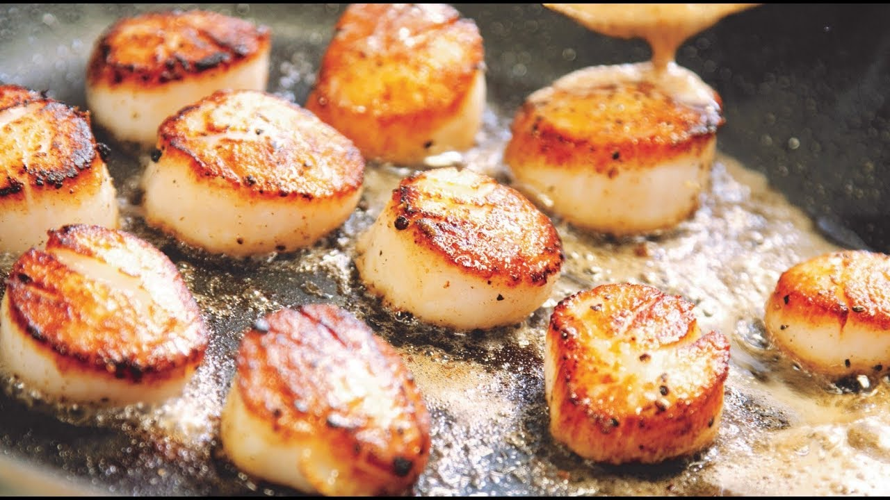

Quick Pan-Seared Scallops

Description
Delicious quick pan-seared scallops perfectly seared on both sides with a touch of lemon.
Ingredients
- 2 tablespoons olive oil
- 1 small shallot, minced
- 1 lemon, juiced
- 12 sea scallops
- 1 pinch salt and freshly ground black pepper
- 2 tablespoons chopped fresh parsley, or to taste
Steps
- Heat olive oil in a large skillet over medium heat. Add shallot; cook and stir until lightly browned, 1 to 2 minutes. Pour in lemon juice and cook until evaporated, scraping the bottom of the skillet with a wooden spoon to release any browned bits, about 3 minutes.
- Place scallops 1/2 inch apart in the skillet. Cook until browned on the bottom, about 1 minute. Flip and continue cooking until the second side is deeply browned, about 1 minute more.
- Transfer scallops to a serving plate; season with salt and pepper. Garnish with parsley.
Return to Home